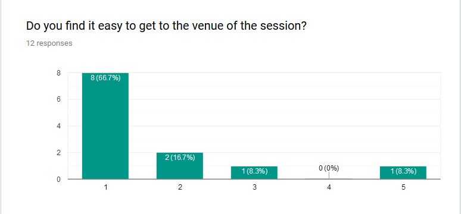
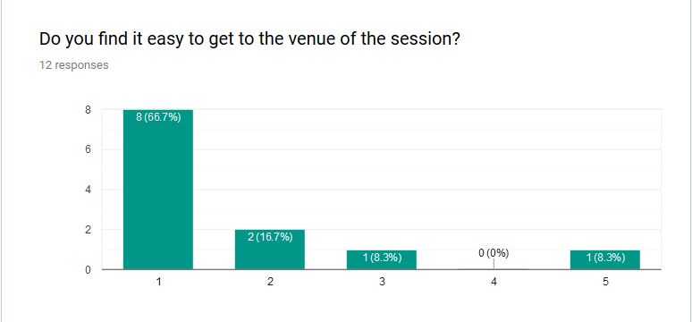
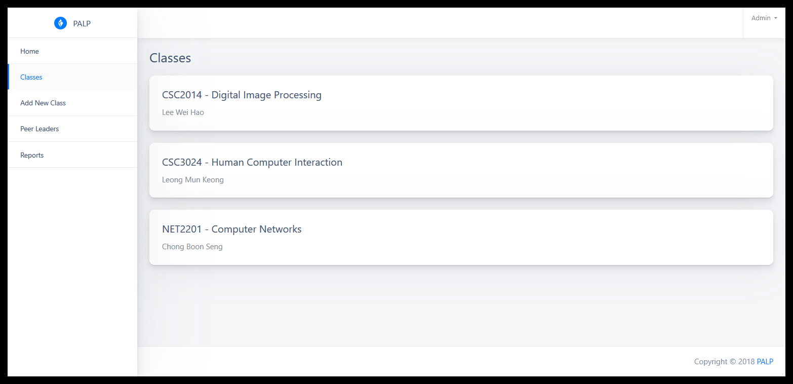
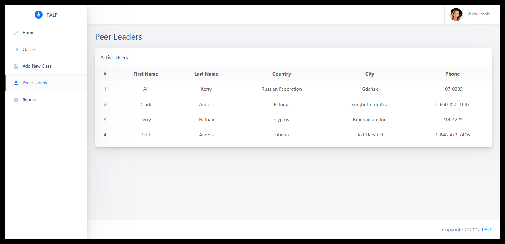

Problem Statement
Not many students are aware of the PALP offered and the benefits of joining this programme. Past PALP attendees find that the effectiveness of it is low.
- Low participation rate from students (shy to ask in person)
- Low awareness of existing PALP offering
- Inflexible schedule (timetable clashing)
- Unorganized
- No effective way of conducting coding session for IT students
Proposed Solution
By offering an online PALP, we are able to increase the number of attendees. By uploading the recording online, students are also able to review previous sessions. New students benefit from the list of FAQs by previous students as well. Students are able to post a follow-up question even after the session ends.
Brainstorming
The team members discussed as a group and suggested ideas based on personal past experiences. Ideas include college assignments (website), enhancement of the eLearn system, guided education app and e-PALP (Electronic Peer Assisted Learning Programme). Each idea's advantages and disadvantages were discussed and weighed. Ultimately, we picked e-PALP due to its uniqueness and potential usefulness. To prove the concept, we referred to Twitch, a famous online streaming site to get inspiration for the interface.

Scope
To make the product stand out effectively, we decided to limit the scope as follow:
Student POV
- Access enrolled sessions
- View past sessions
- Raise question, comment and rate individual sessions
Tutor POV
- Begin & end assigned sessions
- Bookmark, close and reject questions
Other factors which influenced the scope of the product such as the technical capability of the team members, time available for the assignment and financial support from the school were considered as well.
Idea Evaluation
In order to have a deeper understanding of the situation and further insight into the PALP, we have consulted the Academic Enhancement Division.
According to the person in charge, it was found that the quantity of students affect the efficiency of learning. A large session with high number of students is not as effective because the peer leaders are not able to answer every question from the students. The slow-learners or the shy ones might be overlooked.
Furthermore, the designated rooms are not large enough to accomodate every student for each session. Thus, latecomers would have no seats and will be forced to join another session. The lack of flexibility in location (fixed classrooms) and time (1-hour slots) also causes some students to skip due to clashes in their timetable.
Additional Findings
- Part-time students lack the chance of joining the PALP session because the PALP is only conducted within the specific time which clashes with their work schedule.
- Peer leaders often help students even after sessions. This was found to help create a healthy relationship between peer leaders and students which helps students progress in their academic achievement.
- Students who attended the PALP consistently showed the greatest improvement in academic results compared to students who did not participate in this programme.
Based on these findings, the team decides that the idea is well-formed and proves useful in solving the problems mentioned above.
PACT Analysis
People (Student)
Cognitive characteristics- Low learning ability
- Scheme aimed to asking question that does not understand
- Homogeneous: Only students who study in Sunway University
- Novice
- Stammer
- Deafness
People (Tutor)
Cognitive characteristics- High learning ability
- Scheme aimed to answer the question that student ask
- Homogeneous: Only senior students who study/studied in Sunway University
- Expert
Activities
The overall purpose of the proposed system is to allow peer leaders to conduct the PALP session online. It aims to facilitate the programme and make it more accessible to students.
Context
Students and peer leaders use the system entirely online and interact through video conference, text comments and image uploads. Peer leaders answer students' questions by replying in real-time.
Technologies
- Input & output: Personal computer (PC) & mobile devices
- Communication: Video conferences, comments, images
- Real-time
Sketch
In this phase, The list of the requirements that is developed in the requirements specifications can be used to make right decision. We have draw a sketches to clear each sequenced stages and deliverables provide guidelines which are easy to facilitate develop the prototype.
Login page, peer leader dashboard
Student dashboard
Requirement Specification
After complete the problem identification, we have going through the requirements specification. Google forms are created in order to collect data regarding the current PALP, opinion of students about how PALP can be improved. The data we have taken out to analysis and generate a useful result. From the result, we have list down all the issues for the current PALP. We can proceeded to classification of requirements.
Our initial list of questions
Interview for existing learners:
- Is the PALP programme useful to you?
- What are the downsides that you find in this PALP?
- Will you prefer this current PALP or e-PALP?
- What features do you suggest to improve the functionality of PALP?
- What is your first impression of this PALP?
- Is the PALP programme easy to use?
- What are the downsides that you find in this PALP?
- Will you prefer this current PALP or e-PALP?
- What features do you suggest to improve the functionality of PALP?
- What is your first impression of this PALP?
Survey
A survey was carried out to:
- Gather information on the attitude towards the current programme
- Gather factors influencing the effectiveness of the programme
- Gather feedback on the proposed online programme (ePALP)
Major findings include:
- All students found the programme helpful
- 67% of students found it very hard to get to the venue of their session
- 34% of students are likely to attend the session online
Discussion on result
Despite the low number of survey participants, it is found that the programme is very helpful in helping students cope with their academics. There is a disproportionate amount of students who found the sessions hard to attend. This links back to the issue of flexibility inlocation gathered from the interview with the Academic Enhancement Division. Given time, we believe there is a huge potential for an online PALP (ePALP) to replace/complement the existing PALP programme.
All responses are used for academic purposes only and careful actions have been taken to ensure the annoynimity of the participants.
To make it easier for the students and peer leaders to access the Google Form survey, we prepared two QR code for them to scan with their mobile devices.
Survey: Student
 


Survey: Peer Leader
Evolution (Prototype)
Dashboard
Classes

Add Class
Peer Leader List
